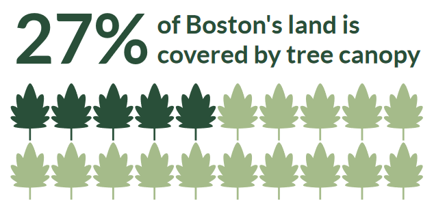
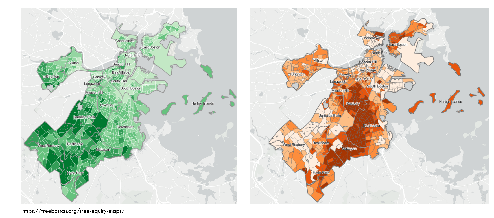

Patterns in environmental and social variables vary meaningfully across space.
Questions in environmental research are often highly place specific.
In order to understand or explain environmental phenomena, we often must study its geographic context.
When does “where” matter?

When does “where” matter?
When does “where” matter?

Spatial data
Spatial data is data related to a location
Spatial data
Spatial data is data related to a location
Location
X position (longitude, easting, etc.)
Y position (latitude, northing, etc.)
Z position (elevation [optional])
Attributes (literally anything else)
Name
ID number
Species
Weight
Color
Condition
Recording method
Spatial data models
Vector
Raster
Vector data
The vector model is used to represent discrete objects that have clearly defined locations or boundaries
Buildings
Borders
Streets
Bodies of water
School districts
Sampling sites
Sewer systems
Vector data and shapefiles
GIS data are often stored across multiple files using the same prefix but different suffixes. Each file serves a different purpose, but all need to be saved in the same file location.
The sf package
The simple features or sf package gives R functions for handling vector data and interfacing it with the tidyverse.
library(tidyverse)library(sf)
The sf package
vernalPools<-st_read("data/GISDATA_CVP_PTPOINT.shp",quiet=TRUE)vernalPools<-st_zm(vernalPools,drop =TRUE, what ="ZM")vernalPools
Simple feature collection with 7881 features and 3 fields
Geometry type: POINT
Dimension: XY
Bounding box: xmin: 34452.43 ymin: 781370.8 xmax: 329087.3 ymax: 958316.4
Projected CRS: NAD83 / Massachusetts Mainland
First 10 features:
cvp_num criteria certified geometry
1 5098 Obligate Species, Fairy Shrimp 2009-05-31 POINT (101876.8 878024.9)
2 4385 Obligate Species 2007-01-08 POINT (124514.6 895968.7)
3 7707 Obligate Species 2016-12-29 POINT (253914.4 830115.9)
4 7627 Obligate Species 2015-08-06 POINT (119130.7 877295.4)
5 1826 Obligate Species 1999-07-15 POINT (188430.5 937917.1)
6 4622 Obligate Species 2007-10-17 POINT (213979.5 863452)
7 6711 Obligate Species 2012-06-11 POINT (271080.4 935932.4)
8 1306 Obligate Species 1997-09-18 POINT (103664 872042.3)
9 6997 Obligate Species 2013-02-27 POINT (238222.5 927072.7)
10 3441 Obligate Species 2004-06-17 POINT (199376.9 865967.6)


{kind=link}